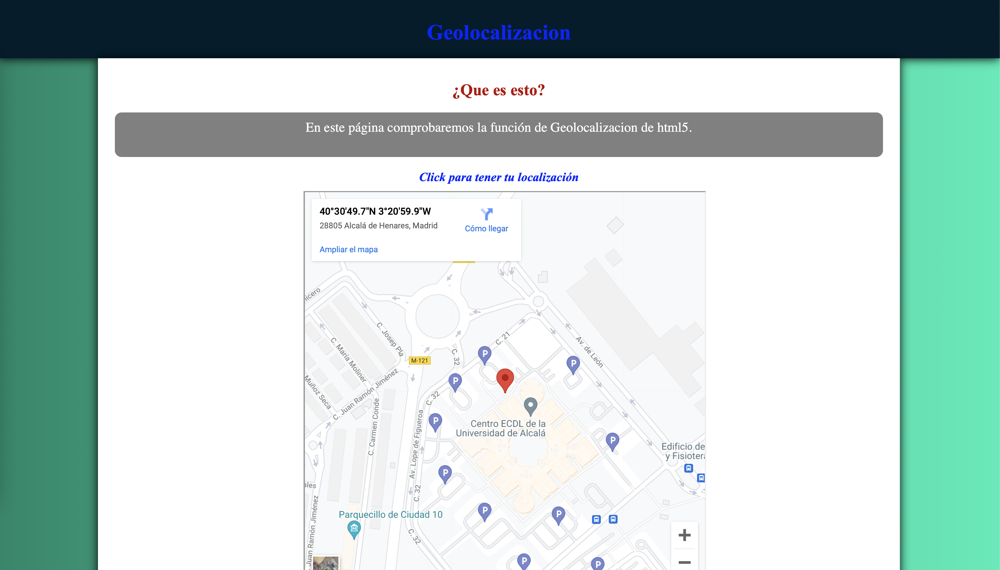
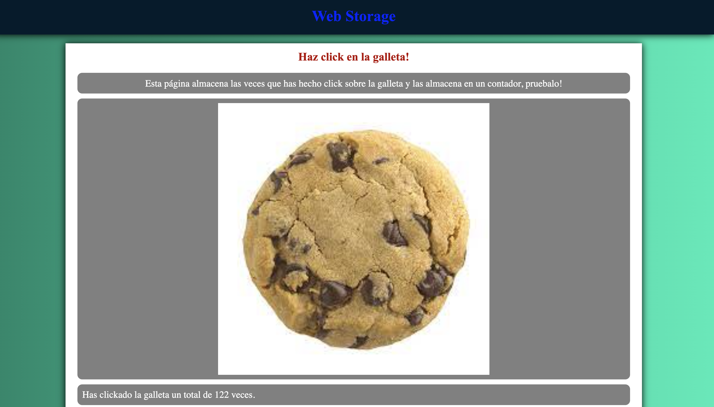
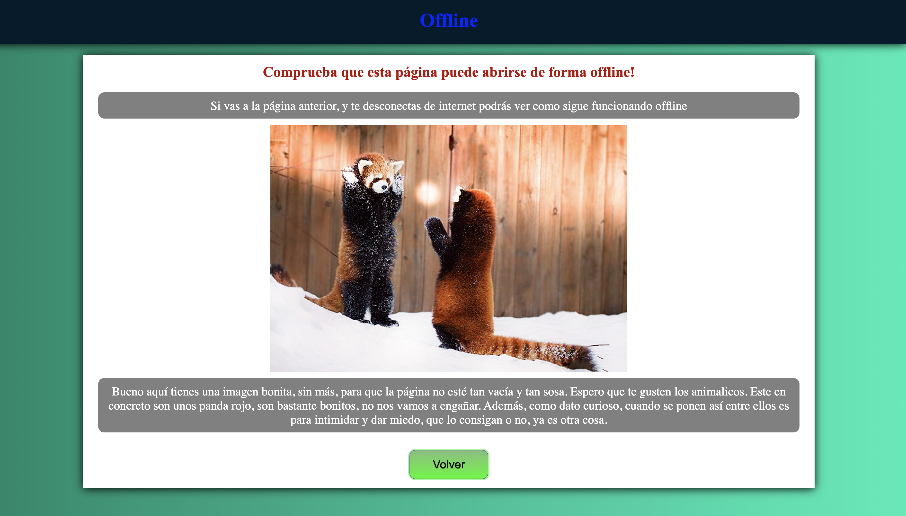

Drag&Drop
En esta pagina podemos ver una de las funcionalidades mas importantes de HTML5, el drag&drop. Vamos a poder mover elementos dentro de la pagina, y tambien podemos soltarlo en otro lugar. En concreto podemos mover a Mario a traves del escenario

Geolocation
En esta pagina podemos ver otra de las funcionalidades mas importantes de HTML5, la geolocalizacion. Vamos a poder obtener la ubicacion de nuestro dispositivo, al hacer click en el enlace de la pagina. Y acceptando el permiso de localizacion.

Web Storage
En esta pagina podemos ver otra de las funcionalidades mas importantes de HTML5, el almacenamiento de datos. Vamos a poder almacenar datos en el navegador, y tambien podemos recuperarlos.

Offline
En esta pagina podemos ver otra de las funcionalidades mas importantes de HTML5, conseguir datos sin conexion. Vamos a poder comprobar como al desconectarnos de internet, se puede seguir viendo la páginas sin conexion.
